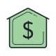

Los montos maximos los definen tu
En un medio de pago electronico, que anlaza el banco,el monto que se transfiere esta definido unicamente por tu banco.
Como usuario no necesitas contraseña
Para usar Greenbank lo unico que necesitas es que tu banco este autorizado a usar Greenbank como medio de pago y un correo electronico, cuando vas a hacer un pago, Greenbank no te pide contraseña.

El pago lo haces desde tu banco virtual
Greenbank se integra con el banco del comercio y tu banco (como usuario). por este razon,cuando haces una compra,no tienes que autenticarte o ingresar a otra pagina web.todo lo haces desde tu banco.